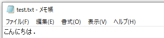
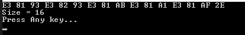
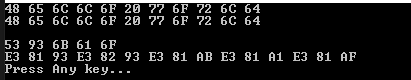
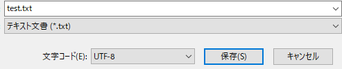

[C#] 43. ストリーム(Stream)とバイナリ(byte[])、エンコード(Encoding)、そしてusingを使い方とIDisposableインターフェース
こんにちは。明月です。
この投稿はC#でストリーム(Stream)とバイナリ(byte[])、エンコード(Encoding)、そしてusingを使い方とIDisposableインターフェースに関する説明です。
以前の投稿でファイルを扱い(IO)に関して説明しました。
link - [C#] 42. ファイルを扱い(IO)とファイルメタデータ(FileInfo)を使い方
ここでStringデータをファイルに作成する時、Encodingを使ってbyte[]配列に変換してファイルを作成するし、ファイルの内容を読み込む時にはbyte[]配列で読み込んでEncodingを使ってStringに変換してコンソールに出力することまで例で説明しました。
我々がファイルを読み込んで作成する時、FileStreamというクラスを使ってファイルを作成するし読み込みました。
まず、Streamに関する説明ですが、ストリームとは一連のデータ配列という意味です。つまり、一つのデータ値では意味がなく、データの集合あるいは配列が一つのデータとして意味になるという意味です。
我々がStringのデータをbyteに変換したので、UTF-8の変換により英語文字の一つが一つの値で配列に格納されていますが、もし英語ではなく日本語ならどのぐらいのバイトになるでしょう？

using System;
using System.IO;
namespace Example
{
class Program
{
// 実行関数
static void Main(string[] args)
{
// ファイルメタデータ取得
var file = new FileInfo("d:\\work\\test.txt");
// FileStream生成
// 生成するファイル名、オプション(ファイル開く)、ファイルアクセス権限(読み取り)
var stream = new FileStream("d:\\work\\test.txt", FileMode.Open, FileAccess.Read);
try
{
// ファイルメタデータでファイルサイズを取得してbyte配列を生成
var binary = new byte[file.Length];
// streamでファイルを読み取り
stream.Read(binary, 0, binary.Length);
// データを16進数で表現する。
foreach (var b in binary)
{
// コンソールに出力
Console.Write("{0:X2} ", b);
}
// 改行
Console.WriteLine();
// データサイズをコンソールに出力
Console.WriteLine("Size = " + file.Length);
}
finally
{
// ストリームを閉める。
stream.Close();
}
// 任意のキーを押してください
Console.WriteLine("Press Any key...");
Console.ReadLine();
}
}
}

上の例で最後の0x2E(46)はasciiコードのピリオドです。その以外の15バイトは日本語です。つまり、ひらがなの一文字で3バイトのサイズを持っています。
この「こ」になるデータは「E3 81 93」ですが、ここで一つのbyteは値は意味がありません。データの意味を持つためには3byteが合わせて、Stringに「こ」というデータに認識することです。
これがストリームということです。一つのデータを表現するためには一連の値を配列で表すことです。
ここで説明しやすくするためにStringのデータで説明しましたが、プログラムでは使ってるリソースはイメージや動画などのデータのファイルなどがあります。そのデータはすべてバイトになっています。
つまり、このデータは一つのbyteの値では意味がありませんが、byteの値が一連の配列になるとイメージや動画になることです。これをストリームと言います。
例えば、我々がイメージプログラムでイメージをモニターに出力するため、約束したbyteの集合(規約)、データストリームが必要ということです。動画も同じ意味です。画面に連続なイメージを出力するし、合わせてスピーカーに音を出すデータ、約束したbyteの集合を動画データというし、データストリームと言います。
このデータを扱うデータはほぼStreamを扱うクラスを持っています。
IOもそうだし、通信を通ってデータ送受信するソケットにもStreamクラスがあります。その以外に、ハードウェアの間にデータを転送することだけではなく、メモリにbyte[]のタイプではなく、ストリームタイプのままで割り当てするMemoryStreamもあります。
このストリームはコネクション(Connection)が存在しますが、データのロックと思えば良いです。データストリームは途中でデータが規約に合わせて修正できないと読めないデータになるからです。(Check in, Check out機能だと思えば?)
それで常にこのストリームは使用が終わったらClose関数でコネクション(Connection)を閉めなければならにです。
もちろん、プログラムが終了するとプログラムで使ったすべてのコネクションは自動に終了されますが、サーバみたいに24時間に実行しているプログラムならこのリソースコネクションもよく管理しなければならないです。
それで以前にはtry ~ finallyでよく使いましたが、C#にはそれよりもっとシンプルなusingキーワードでコネクションを管理することができます。
using System;
using System.IO;
namespace Example
{
class Program
{
// 実行関数
static void Main(string[] args)
{
// ファイルメタデータ取得
var file = new FileInfo("d:\\work\\test.txt");
// FileStream生成
// 生成するファイル名、オプション(ファイル開く)、ファイルアクセス権限(読み取り)
// usingはIDisposableインターフェースを継承したクラスで、usingのスタック領域が終了すると自動にCloseを呼び出します。
using (var stream = new FileStream("d:\\work\\test.txt", FileMode.Open, FileAccess.Read))
{
// ファイルメタデータでファイルサイズを取得してbyte配列を生成
var binary = new byte[file.Length];
// streamでファイルを読み取り
stream.Read(binary, 0, binary.Length);
// データを16進数で表現する。
foreach (var b in binary)
{
// コンソールに出力
Console.Write("{0:X2} ", b);
}
// 改行
Console.WriteLine();
// データサイズをコンソールに出力
Console.WriteLine("Size = " + file.Length);
}
// 任意のキーを押してください
Console.WriteLine("Press Any key...");
Console.ReadLine();
}
}
}
結果は同じ結果ですが、try ~ finallyよりコードが綺麗です。
usingキーワードはIDisposableインターフェースを継承したクラスでスタックが終了すると自動にDispose関数が呼び出します。
using System;
namespace Example
{
// IDisposableインターフェースを継承
class Test : IDisposable
{
// Close関数
public void Close()
{
// コンソールに出力
Console.WriteLine("Close!!!");
}
// IDisposableインターフェースのDispose関数の再定義
public void Dispose()
{
// Close関数を呼び出す。
Close();
}
}
class Program
{
// 実行関数
static void Main(string[] args)
{
// usingキーワード、Testインスタンス生成
using(var test = new Test())
{
// コンソールに出力
Console.WriteLine("Hello world");
}
// 任意のキーを押してください
Console.WriteLine("Press Any key...");
Console.ReadLine();
}
}
}
上の例はusingキーワードを使うためにTestクラスを作成しました。
TestクラスはIDisposableインスタンスを継承してDispose関数を再定義します。FileStreamクラスは上の流れで動くと思えば良いです。
また、始めに戻ってエンコードに関して説明します。
上でストリームとは一連のデータの値の配列だと説明しました。そのため、Stringのデータをbyte[]に変換しなければならないですが、ToCharArray関数で変換とEncoding.UTF8.GetBytesで変換する方法があります。
using System;
using System.Text;
namespace Example
{
class Program
{
// 出力関数
static void Print(dynamic val)
{
// 配列を繰り返しで
foreach (var b in val)
{
// コンソールに出力
Console.Write("{0:X2} ", (byte)b);
}
// 改行
Console.WriteLine();
}
// 実行関数
static void Main(string[] args)
{
// 出力 ToCharArray
Print("Hello world".ToCharArray());
// 出力 Encoding.UTF8.GetBytes
Print(Encoding.UTF8.GetBytes("Hello world"));
// 改行
Console.WriteLine();
// 出力 ToCharArray
Print("こんにちは".ToCharArray());
// 出力 Encoding.UTF8.GetBytes
Print(Encoding.UTF8.GetBytes("こんにちは"));
// 任意のキーを押してください
Console.WriteLine("Press Any key...");
Console.ReadLine();
}
}
}

参考でcharとbyteの関係はunsigned char、符号ないcharタイプがbyteタイプです。なので、charとbyteは同じデータを扱うデータタイプです。
それでStringでToCharArray関数を使ってcharに変換することができますが、英語やasciiコードで表現する値はEncodingで変換することと同じ結果で出力されます。
でも、日本語はasciiコードで表現することができません。つまり、C#だけではなく、メモ帳などの他のプログラムでも読み込まれるためにはエンコードが必要です。上にはUTF-8のEncodingタイプで変換しました。

メモ帳で文字タイプを確認すればUTF-8で作成されていることを確認できます。
なので、一般的に文字列(String)をbyte[]に変換する時にはEncodingクラスを使ってbyte[]配列に変換してFileStreamでファイルを作成、読み込みします。
ここまでC#でストリーム(Stream)とバイナリ(byte[])、エンコード(Encoding)、そしてusingを使い方とIDisposableインターフェースに関する説明でした。
ご不明なところや間違いところがあればコメントしてください。
- [C#] 50. Reflection機能を使い方 - Class2021/10/13 18:34:13
- [C#] 49. Operator(演算子)のオーバーロードを使い方2021/10/12 18:28:42
- [C#] 48. IEnumerableとIEnumerator、そしてyieldキーワード2021/10/11 19:49:33
- [C#] 47. Nugetを使い方(外部ライブラリ)とデータベース(MariaDB(Mysql))を使い方、そしてトランザクション(Transaction)2021/10/08 18:58:57
- [C#] 46. データベース(MSSQL)に接続する方法2021/10/07 18:39:58
- [C#] 45. ネットワークソケット通信(Socket)を使い方2021/10/06 19:06:25
- [C#] 44. ファイル(FileInfo)とディレクトリ(DirectoryInfo)を扱い2021/10/05 19:29:34
- [C#] 43. ストリーム(Stream)とバイナリ(byte[])、エンコード(Encoding)、そしてusingを使い方とIDisposableインターフェース2021/10/04 18:33:04
- [C#] 42. ファイルを扱い(IO)とファイルメタデータ(FileInfo)を使い方2021/10/01 20:10:21
- [C#] 41. Taskクラスとasync、awaitを使い方2021/10/01 18:59:14
- [C#] 40. Linqを利用した並列処理(Parallel)を使い方2020/05/13 17:37:13
- [C#] 39. lockキーワードとdeadlock(デッドロック)2019/07/24 00:57:35
- [C#] 38. ThreadPoolの使い方2019/07/23 00:05:40
- [C#] 37. スレッド(Thread)を使い方、Thread.Sleep関数を使い方2019/07/22 23:45:05
- [C#] 36. 拡張メソッドを使い方2019/07/22 23:30:17
- [Design pattern] 3-1. ストラテジーパターン(Strategy pattern)2021/11/03 18:38:52
- [C#] 60. ウィンドウフォーム(Window form)のイベント設定する方法2021/11/02 21:18:08
- [Design pattern] 2-7. ファサードパターン(Facade pattern)2021/11/02 19:32:31
- [Design pattern] 2-6. プロキシパターン(Proxy pattern)2021/11/01 19:42:44
- [Design pattern] 2-5. フライウェイトパターン(Flyweight pattern)2021/10/29 19:48:27
- [C#] 59. ウィンドウフォーム(Window form)にコントロール(Control)を使い方法2021/10/29 19:45:43
- [Design pattern] 2-4. デコレーターパターン(Decorator pattern)2021/10/28 20:11:13
- [C#] 58. ウィンドウフォーム(Window form)を作成する方法、そしてウィンドウメッセージとキュー2021/10/27 20:35:44
- [Design pattern] 2-3. ブリッジパターン(Bridge pattern)2021/10/27 20:32:21
- [Design pattern] 2-2. コンポジットパターン(Composite pattern)2021/10/27 20:30:54
- [Design pattern] 2-1. アダプターパターン(Adapter pattern)2021/10/26 19:12:40
- [Project design] プログラム最終テスト - ST(System test(Standard, Scenario))2021/10/26 19:10:07
- [Project design] プログラム結合テスト - IT(Integration test)2021/10/25 20:12:17
- [Python] Seleniumライブラリを使う方法(自動ウェブテスト、ウェブスクレイピング)2021/10/25 19:29:00
- [Design pattern] 1-5. プロトタイプパターン(Prototype pattern)2021/10/22 19:35:45